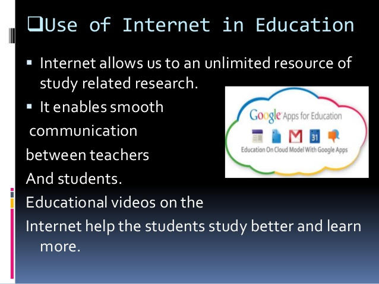

The World Wide Web started on August 6, 1991. The internet has had a huge impact on education. It gives valuable opportunites to improve the quality of education at schools. It has a had a huge impact on education. With the internet, teachers use websites and "online materials" to prepare their lessons, and help students learn better. The internet is able to help students with more attention by having different ways to help them understand.
The internet has helped people's lives. It has made it easier to live. "Internet is one of the most important source through which an individual can easily get information, remain in touch with their beloved ones, and perform thousands of activities." The internet is rich in knowledge and helps children prepare for the future and learn about many important factors in life to succeed. With the internet available to students and teachers, "we can speed up the economic growth and enhance the well-being of society throughout the world." The network will keep giving endless information which makes it an "inexhaustible source of information."
Despite the internet being an invaluable source, it also in some cases is bad for us. With the internet, many believe that their relationships with others weaken. People use the internet for leisure as well. The WWW can give people unhealthy addictions to staring at screens. The internet is full of entertaining and addicting websites so people use it for different things that they like which can addict them. "Teens can develop addiction due to various reasons like trying to escape loneliness and depression, social anxiety, and intense desire to search for knowledge." Another report said that kids who spend most of their time in a virtual world are easily moved away from the real world. Also one of the biggest things why the WWW is bad is because it causes sleep deprivation.
The internet has impacted education in a really positive way. The internet has helped schools reduce costs of materials. The internet has helped students take advantage of the internet outside of school times to learn new stuff that are not taught in school. It helps increase knowledge of students. Many people nowadays are taking online classes. Currently 48 states support online learning. It's also helped increase summer school programs. It opens doors to infinite information and gives students "extra resources, study materials, and educational games." Here is a picture that shows the statistics of the use of the internet by elementary, middle, and high school students from 2002 to 2010.
Here is a table of innovations in the internet with the year and the name of the inventor. Here on this link will be a quick timeline of some of the important events that impacted the internet.
{kind=link}